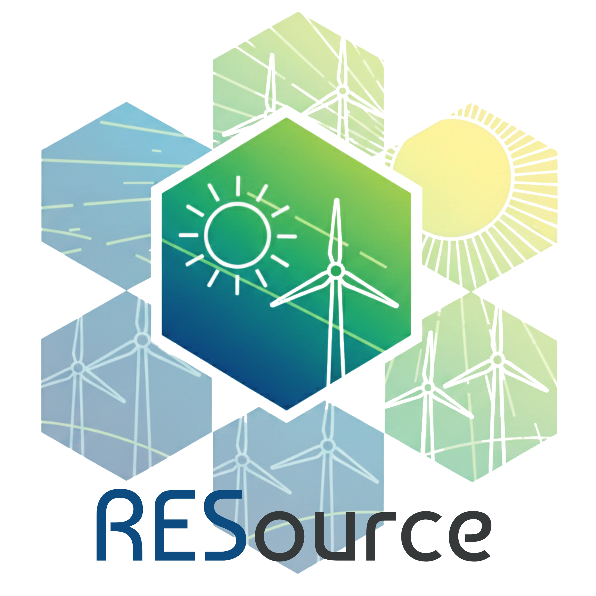
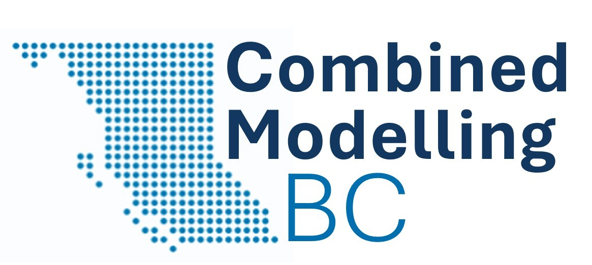
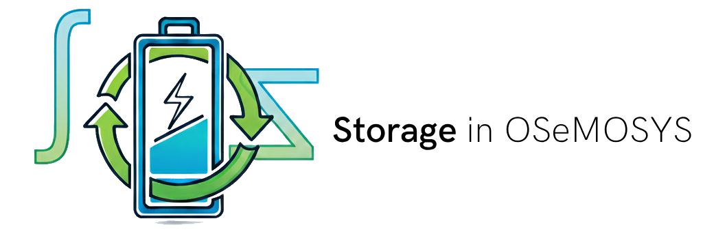

Energy Planner & Analyst (Consultant)
 BC Hydro
BC Hydro
Portfolio optimization, planning analytics and decision-support tools for the provincial Integrated Resource Plan.
Energy planning · Research · Open models
I’m Elias, an energy systems modeller and doctoral researcher working at the intersection of long-term resource planning, open-source modelling and evidence-based decisions.
My focus
Badges & training
Also trained in
Curriculum vitae
BC HydroPortfolio optimization, planning analytics and decision-support tools for the provincial Integrated Resource Plan.
 Economic and Social Commission for Asia and the Pacific · United Nations
Economic and Social Commission for Asia and the Pacific · United Nations Simon Fraser University · ΔE+ Research Lab
Simon Fraser University · ΔE+ Research LabCombining capacity-expansion and operational power-system models for reliable, cost-effective decarbonization.
 Bangladesh Power Development Board
Bangladesh Power Development BoardIntegrated energy and power master planning with JICA and the Institute of Energy Economics, Japan.
Tariff modelling and technical oversight for a 1,320 MW power project.
Bangladesh Power Development BoardGeneration planning, demand forecasting and studies covering more than 4,000 MW of capacity.
BPDB · Teletalk · HRC TechnologiesPower-plant commercial operations, transmission networks and telecom infrastructure.
Simon Fraser University
 University of Dhaka
University of Dhaka

 MIST / BUP
MIST / BUP
Badges & training
Also trained in
Open model land
Contributions spanning resource assessment, power-system optimization, model linking and electrification.
 Lead contribution
Lead contributionExploring pathways toward a low-carbon energy system.
Visit project ↗
Lead contributionSolar and land-based wind resource assessment.
Visit project ↗ Lead contribution
Lead contributionIntegrated energy–water–land system exploration.
Visit project ↗ Lead contribution
Lead contributionOpen power-system modelling for British Columbia.
Visit project ↗
Lead contributionLinking complementary planning models.
Visit project ↗
Lead contributionRepresenting storage technologies in OSeMOSYS.
Visit project ↗ Lead contribution
Lead contributionEvaluating fleet electrification pathways and impacts.
Visit project ↗Research and scholarship
Selected work on renewable-energy potential, storage, electrification, resource planning and regional power systems.
M. E. Islam, P. McWhannel, and T. Niet, “Mapping feasible renewable transition space: Land-use, conservation, and grid-access constraints on wind and solar in British Columbia,” Energy 360, vol. 6, p. 100077, Dec. 2026.
DOI 10.1016/j.energ.2026.100077 ↗B. Borba, M. E. Islam, P. McWhannel, and T. Niet, “Storage in Long-Term Energy Planning Models with Temporal Aggregation: Best Practices and Algorithms,” SSRN, 2025.
DOI 10.2139/ssrn.5584535 ↗K. Kuling, M. E. Islam, P. McWhannel, E. Kjeang, and T. Niet, “Modelling the Grid Impacts of Electric Vehicle Uptake and Charging Strategies in British Columbia,” SSRN, 2025.
DOI 10.2139/ssrn.5592997 ↗N. Arianpoo, M. E. Islam, A. S. Wright, and T. Niet, “Electrification policy impacts on land system in British Columbia, Canada,” Renewable and Sustainable Energy Transition, vol. 5, p. 100080, Jan. 2024.
View publication ↗Md. E. Islam, Md. M. Z. Khan, D. Chattopadhyay, and J. Väyrynen, “Impact of COVID-19 on dispatch and capacity plan: A case study for Bangladesh,” The Electricity Journal, vol. 34, no. 5, p. 106955, Jun. 2021.
DOI 10.1016/j.tej.2021.106955 ↗Md. E. Islam, Md. M. Z. Khan, D. Chattopadhyay, and G. Draugelis, “Economic Benefits of Cross Border Power Trading: A Case Study for Bangladesh,” in 2020 IEEE Power & Energy Society General Meeting, Montreal, Canada, pp. 1–5.
DOI 10.1109/PESGM41954.2020.9282003 ↗Md. E. Islam, Md. M. Z. Khan, C. Nicolas, and D. Chattopadhyay, “Planning for Direct Load Control and Energy Efficiency: A Case Study for Bangladesh,” in 2019 IEEE Power & Energy Society General Meeting, Atlanta, USA, pp. 1–5.
DOI 10.1109/PESGM40551.2019.8973505 ↗Models 101 · interactive explainer
How a messy real-world grid becomes a tidy set of equations a computer can solve — and the one distinction that trips most people up: capacity-expansion versus operational models. Scroll to build the picture.
Here is the finished model — three buses, some generators, transmission and a city. Below, the same thing assembled one step at a time.
Reduce a whole region to a few buses — points where power is injected or withdrawn. Here, three: a generation-rich North, a South, and a City where demand sits.
The City draws power on a daily load profile. Demand is what the whole system exists to serve, so it anchors every other decision.
Wind and hydro at the North bus; solar and gas at the South; a battery near the City. Each is just a short list of numbers: capacity, cost, and — for wind and solar — an availability profile.
Transmission corridors link the buses, each with a limited MW rating. Cheap Northern power only helps the City if a line can carry it — so topology shapes what the model can do.
The step most explainers skip: write the whole thing as a Linear Program (LP). The unknowns are how much each unit generates and how much flows on each line; the goal is minimum total cost; the rules are all linear — so an LP solver finds the exact cheapest answer, fast.
Hand the LP to the solver and it returns the cheapest feasible dispatch — power flows, storage charges and discharges — plus the answers: system cost, emissions, and a build-and-run plan. Change a line limit or a fuel price and it all rearranges.
A model is a deliberate abstraction. On the left is the world as it is; on the right, the world as the optimiser sees it — every physical asset collapsed into a node, an edge, and a short list of numbers.
Turbines, a dam, panels, a plant, wires, a city — messy, physical, continuous.
Three buses, three edges, a handful of numbers. Solvable, testable, reproducible.
capacity, cost, and a time-varying availability profilecapacity, fuel cost, ramp and emission factorsload profilecapacity (MW) and lossesenergy (MWh), power (MW) and round-trip efficiencyThe skill of modelling is choosing which of these numbers matter for the question — and which real-world detail you can safely throw away.
Both are "energy models," but they answer different questions on different clocks. Confusing them is the most common mistake newcomers make.
Plans investment over decades: which technologies to build, when, and when to retire — minimising total investment plus operating cost across the whole horizon.
Takes the fleet as fixed and decides, hour by hour, which plants run — respecting start-up limits, ramp rates, reserves and storage cycling.
Capacity expansion plans all the way to 2050 in a handful of coarse slices. Pick a single transitional year — here 2035 — and the operational model dissects it into 8,760 hourly steps to check whether the plan can actually be run, hour by hour.
| Dimension | Capacity expansion | Operational / dispatch |
|---|---|---|
| Question | What and when to build (and retire)? | How to run the existing fleet right now? |
| Time horizon | Years to decades (e.g. 2025–2050) | Hours to a year, solved chronologically |
| Time resolution | Coarse — representative time-slices or typical days | Fine — hourly or sub-hourly (8,760 h/yr) |
| Capacity | A decision variable — the model chooses it | Fixed input — given by the plan |
| Key detail kept | Investment economics, long-run trade-offs | Unit commitment, ramping, reserves, storage state |
| Typical tools | OSeMOSYS, TIMES, GenX, PyPSA* | Production-cost / UC models, PLEXOS, PyPSA* |
| Output | An investment pathway | An operating schedule & reliability check |
*Some frameworks (e.g. PyPSA) can be configured for either role — the distinction is the question and resolution, not always the software.
Here's the catch. To plan decades ahead, the capacity-expansion model has to squeeze a whole year into a few representative slices — otherwise it would be extremely difficult and slow to solve. But that shortcut quietly flatters the plan: it hides the awkward hours, the fast ramps, the reserve shortfalls, the days when storage runs dry. So a build-out that looks beautifully cheap on the planning spreadsheet can turn out to be a nightmare to actually operate.
The way out is to make the two models talk to each other: build the fleet with the expansion model, then stress-test that exact fleet in a high-resolution operational model across all 8,760 hours, and feed what breaks back into the next planning run. Do that well and you get a plan that is both affordable and keeps the lights on.
That coupling — long-term investment on one side, hour-by-hour operational reality on the other — is exactly the problem I work on. I'm exploring the tools that let these two models actually talk to each other, and setting the rules that make their results agree rather than contradict. It's harder (and more interesting) than either model alone.
Milestones & news
Selected milestones, features and conversations from my work, research and life in energy systems.
Active model development

Journal news · Energy 360 · Open access article
This study maps where new wind and solar projects could realistically go in British Columbia. It removes places that are protected, environmentally sensitive, or unsuitable for development. It also checks whether promising locations are close enough to the electricity grid. The results show how land choices can change the amount of renewable energy available. The maps can help planners compare practical pathways toward a cleaner electricity system.
Read the paper in Energy 360 ↗Featured by Simon Fraser University
SFU’s Faculty of Graduate Studies profiled my path from power-utility planning into Sustainable Energy Engineering research. The conversation explores renewable-resource planning, open-source modelling, the value of research collaboration and the people who have supported my graduate journey.